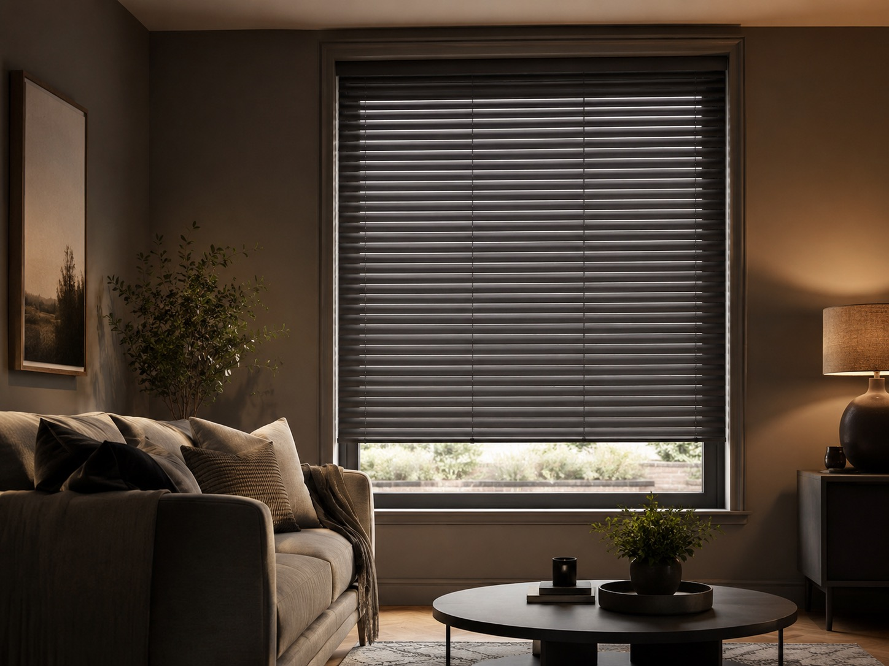
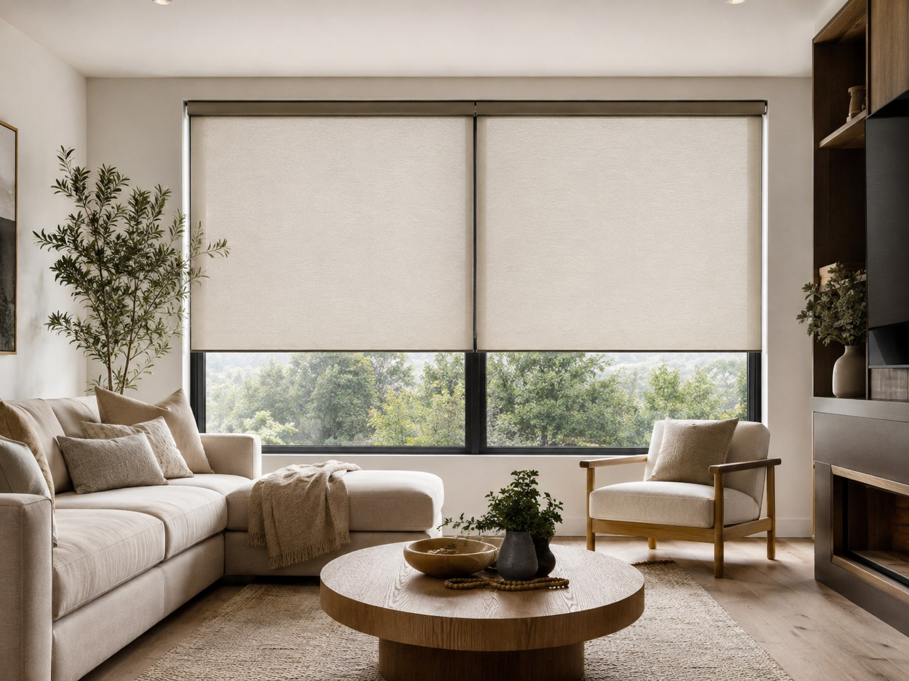
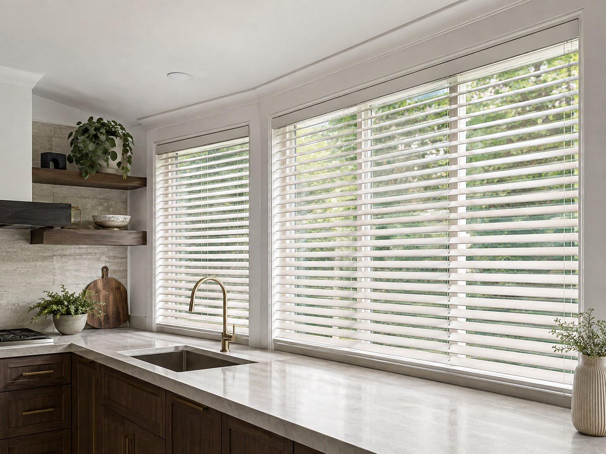

Wooden Venetians
Real timber, natural grain and adjustable slats for warmth, privacy and precise light control.
Natural TimberView Wooden VenetiansNine distinct styles, all made to your exact measurements and fitted by hand. Compare the range below, or let us bring the samples and help you narrow it down at a free home visit.

Start with the look you love or the problem you need to solve. Every option is measured for your window and fitted by us across Braintree and surrounding areas.
Real timber, natural grain and adjustable slats for warmth, privacy and precise light control.
Natural TimberView Wooden VenetiansThe timber look with a wipe-clean, moisture-resistant finish for busy kitchens and bathrooms.
Moisture ResistantView Faux Wood VenetiansCrisp aluminium slats, durable finishes and accurate glare control for contemporary rooms and offices.
ContemporaryView Metal VenetiansPleated and roof-pitch blinds made to fit angled glazing precisely, keeping the room cool, shaded and glare-free.
Roof & Glazed RoomsView Conservatory BlindsPurpose-made blackout and light-filtering options fitted precisely to compatible roof windows.
Roof WindowsView Velux BlindsClean, compact and endlessly adaptable, with blackout, sheer, plain and patterned fabrics available.
Blackout & SheerView RollersPractical coverage for patio doors and wide windows, with smooth, gradual control throughout the day.
Wide GlazingView VerticalsSoft tailored folds that bring fabric, pattern and a considered finish to bedrooms and living spaces.
Soft FabricView RomansClip straight onto uPVC windows and doors with no drilling — a clean, fully cordless fit for frames and French doors.
No-Drill FitView Perfect Fit BlindsThe best blind balances appearance, light, privacy and the practical demands of the space.
Choose Wooden Venetians or Romans when texture and a softer, more furnished feeling matter most.
Faux Wood, Metal Venetians and suitable Roller fabrics are practical choices for kitchens and bathrooms.
Look first at blackout Rollers, lined Romans or purpose-made Velux blackout blinds for roof windows.
Verticals cover broad openings neatly and let you adjust light without opening the whole blind.


A few useful starting points before seeing the samples in your own home.
Faux Wood Venetians, metal Venetians and suitable moisture-resistant Roller fabrics are practical choices for humid or hardworking rooms.
Blackout Roller, Roman and Velux blinds are the strongest starting points. The final result also depends on how the blind is fitted and the light gaps around the window.
Vertical blinds are especially practical across wide windows and glazed doors because the louvres stack neatly and give gradual control over light and privacy.
Yes. We bring relevant samples to your free home visit so you can compare colours, textures and finishes in the room where the blinds will be fitted.
We'll bring the samples, measure each window and help you compare the options without pressure.